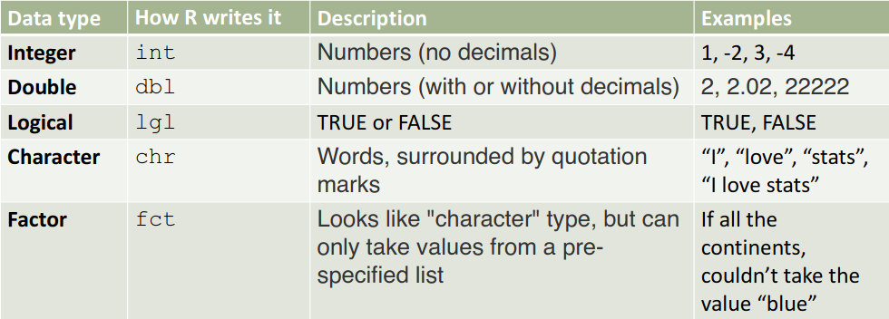

Hello and Welcome!
My name is Tahir Muhammad, and I am your TA for STA107 this semester. I will be mainly using this site to present your relevant weekly tutorials, and end off with additional resources / practice problems in order to help you succeed in this course. If you have any suggestions, recommendations, or any form of feedback which you would like me to know, please use the Feedback Form in top right corner to let me know (Anonymous options aswell!)
Tahir Muhammad, Tahir.muhammad@mail.utoronto.ca
Tutorial Times are Friday 2-3 PM, and Office hours are on Wednesday 6-7 PM
You can find all of the Teaching Assistant tutorials, and office hours information at www.Quercus/STA107/TAs.com
Ice Breakers – Your name, Program of study, one thing that you absolutely love / or one thing that you absolutely hate about quarantine
The goal of this section is to list all topics covered in this weeks lecture, and then go through the ones students feel they need more clarification on.
The plan today is to cover lots of R basics, so you can see what R is capable of and learn these concepts on your own. In this section, we will cover reading data into R, using R console as a Calculator, Variables, Comments, Vectors, and different types of data frames in R.
We can preform basic mathematic operations in R, just like you would on any normal calculator.
Note that the hashtag symbol (#) is a comment and anything after that line in R is not read in as code.
# Addition
3+3## [1] 6# Subtraction
219-9## [1] 210# Multiplication
50*2## [1] 100# Division
1000/2## [1] 500# Exponents
10^2## [1] 100# Order of Operations still applies here
(2+2)*4## [1] 16# Special numbers
pi## [1] 3.141593exp(1)## [1] 2.718282We can also store these results using an assignment operator into a variable, and use those variables going further.
# Assignment Operator is the = sign, or <-
# Statisticians usually use <- for naming variables
x <- 2+2
x## [1] 4y <- 10
x*y## [1] 40# We can also name our variables, use them as necessary
my_name <- "Tahir"
cat("Hi, nice to meet you all! -", my_name)## Hi, nice to meet you all! - TahirThere are different types of data in R.
The ones we have seen above are integer, double (numbers with decimals), and char (defined by quotations).
Below is a table with some examples of each data type.

We can check the certain types of our variables using the is. command, where datatype is replaced by one of the data types mentioned above. See some examples below.
name <- "Tahir"
is.integer(name)## [1] FALSEis.character(name)## [1] TRUEVectors are one of the most simplest data structures in R.
You can make an vector by grouping some values of the same data type together with c(), which combines the single elements into a vector.
# Basic vector operation
x <- c(1,4,6,-8,5)
# Adding an element to a vector
x+y
# Multiplying by a scalar to vector y
x*y
# Methods on vectors
mean(x)
var(x)
sd(x)
var(x)
median(x)
sum(x)
prod(x) Copyright © 2021 by Tahir Muhammad, Inc. All rights reserved.